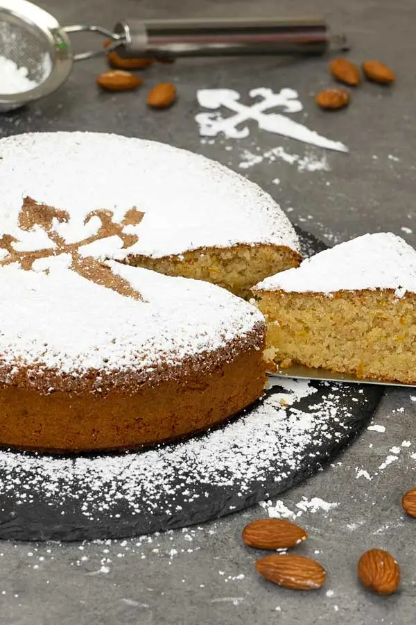

Tarta de Santiago

Delicious Spanish almond cake. It is super easy to make, with only 3 main ingredients. I always feel this type of cake is just perfect for the holiday season.
Ingredients
- 3 eggs:
Good quality, medium size.
- 3/4 cup sugar (150g):
You go a bit higher or lower to suit your taste.
- 1/2 cup almond flour (150g):
Use good quality almonds, since it is the main ingredient.
- 1/2 teaspoon cinnamon powder:
It makes the cake real comfy.
- Zest of 1 lemon and 1 clementine:
It gives the cake a small citrus flavor.
- Icing sugar:
For dusting the top once it is baked.
Steps
- Add eggs and sugar into a bowl and whisk until the mixture turns pale.
- Add the rest of the ingredients, except for icing sugar and using a spatula, gently fold everything until well combine.
- Pour batter into a 7 inch (18 cm) springform pan that has been buttered and floured. Bake in a preheated oven at 360ºF (180ºC) for 40 minutes or until golden brown and fully cooked.
- Cool completely. Place the Santiago cross cut out on top and dust generous amount of icing sugar all over the cake. Carefully remove the cut out. Slice and serve.
- Enjoy!